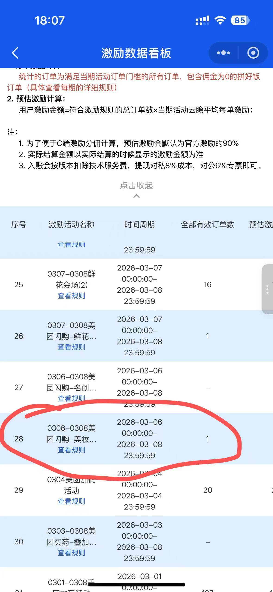

美团试吃官金额应怎样拆开解释？
CPA 当前统一按 10 元口径说明；激励入账仍要区分版本技术服务费、对私 8% 成本和对公 6% 专票成本。页面预估、上游实结和实际提现不是同一个金额节点，最终以正式账单为准。
按业务汇总群聊中形成的现行规则、待负责人复核事项和历史口径，保留来源边界与替代关系，避免把旧通知误当成当前承诺。
| 状态 | 含义 | 可否直接对客 |
|---|---|---|
| 现行 | 已由负责人确认且暂无替代通知 | 可以，但需服从后续正式通知 |
| 计划调整 | 方向明确，生效时间或口径尚未正式发布 | 只能说明“计划”，不得描述为已执行 |
| 待复核 | 来自群聊经验、旧版口径或存在冲突 | 不可以，仅供内部核对 |
| 历史 | 旧活动、旧批次、旧结算或已下线内容 | 不可以，只用于追溯 |
| 状态 | 知识点 | 执行边界 |
|---|---|---|
| 现行 | 试吃官 CPA 当前不区分版本，统一为 10 元。 | 后续达到 S 级标准后才可能恢复标准版与旗舰版差异。 |
| 现行 | 前一日数据次日约 10:00 返回，建议 11:00 后查询，最迟 22:00。 | 节假日或上游延迟需配合最新通知。 |
| 现行 | 激励按版本扣技术服务费；提现对私成本 8%，对公 6% 专票。 | 服务费、提现成本和用户实际到账需分开解释。 |
| 阶段口径 | 2026 年 Q3 返返 CPS 按实付金额 × 8% × 商家实际出佣比例计算。 | 商家出佣比例不同，不能把 8% 直接解释为固定到手比例；Q3 结束后重新复核。 |
| 现行 | 试吃官激励明细以官方返回和最终账单为准。 | 未达到最低实付、退款、风控等订单可能不计入。 |
| 阶段口径 | 2026-08-10 至 08-16 群内说明：返返 32% 复购率是云瞻大盘或渠道整体要求，不是 CPS、CPA 分别达标。 | 单推广位暂停线和是否影响佣金属于当期评级治理，必须引用最新周期通知。 |
| 待复核 | 白名单、换链、自助取链、CPS 计算和归因锁佣的细节；试吃官阶段性关闭自由取新链，历史链接与批量白名单另行处理。 | 群内存在阶段做法，必须由商务与技术确认当前版本，不得长期固化 2026-08-11 的批次范围。 |
| 历史 | 旧版 CPA 档位、旧活动门槛、旧会场和短期加奖。 | 不得用于当前报价或客服回复。 |
| 渠道 | 当前处理方式 |
|---|---|
| 有票票 | 可申请退换，在微信群提供单号联系客服。 |
| 淘票票 | 按影城规则执行；购票环节会显示退改签协议，以协议判断是否可退。 |
| 聚推客 | 特殊情况可提交单号尝试向供应商申请；如可退，可能产生手续费，需用户接受。 |
电影票处理窗口短，应优先升级；未取得渠道确认前不得承诺一定能退或免手续费。
当用户同时存在自有联盟授权与云瞻指定联盟配置时，当前系统优先使用用户自有联盟授权。2026-08-17 核心群明确要求按该现行逻辑统一客服口径，淘宝联盟及京东相关同类授权场景均按此判断。
待复核项确认后，应更新为现行或历史，并记录确认人、确认日期、生效时间和替代规则。
CPA 当前统一按 10 元口径说明；激励入账仍要区分版本技术服务费、对私 8% 成本和对公 6% 专票成本。页面预估、上游实结和实际提现不是同一个金额节点，最终以正式账单为准。
次日约 10:00 开始返回，建议 11:00 后查询，最迟不晚于 22:00。上午暂未显示不能立即判定漏单；超过最迟时间或同批大面积缺失，再按数据异常 SOP 升级。
2026-08-10 至 08-16 的群内确认是大盘或渠道整体数据要求，不是 CPS、CPA 分别满足。该比例、低复购推广位暂停线及是否影响佣金均属于阶段评级规则，必须按最新周期通知执行。
2026 年 Q3 阶段通知说明，实际 CPS 佣金还要乘以商家实际出佣比例，即实付金额 × 8% × 商家实际出佣比例。商家比例不同，最终 CPS 会不同；Q3 结束或官方规则变化后必须重新确认，不能把 8% 当作所有商家的固定到手比例。
当前确认的淘宝闪购口径为 CPS 10%、CPA 20%，给用户同步的订单已扣对应官方费用。饿了么旧版细分为天天赚现金 0%、叠红包 20%、其他 CPS 10%，该细分属于待再次确认内容，对客前应引用最新通知。
2026-05-13 群内统一规则：同店点击后的跟单期为 15 天；订单归因优先级为淘礼金高于超级红包，高于直接推广链接。使用多个超级红包时，佣金跟踪给最早的超级红包推广者；预售和大促特殊订单仍按当期官方规则。
京东以父订单定档，再把父订单总激励在子订单间均分。不能用父订单档位乘以子订单数量，也不能把单个子订单金额当成整单激励。建议主推“京东外卖-惊喜红包”。
当前同时存在实时回传和 T+2 自动回传，支持抖口令、海报、短链接、deeplink 和口令中间页。官方未给统一失效时间，因此发放后要做打开、落地、下单和首单归因验证，不承诺永久有效。
当前按 M+2 发激励，例如 6 月发 5 月账单与 4 月激励；未来计划改为 M+1，但未正式生效前仍按 M+2 解释。飞猪酒店佣金一直全额对外发放。
不可以。有票票可在微信群提供单号申请；淘票票以购票环节展示的影城退改签协议为准；聚推客仅能尝试向供应商申请，可能产生手续费。未取得渠道结果前不得承诺必退。

{kind=link}